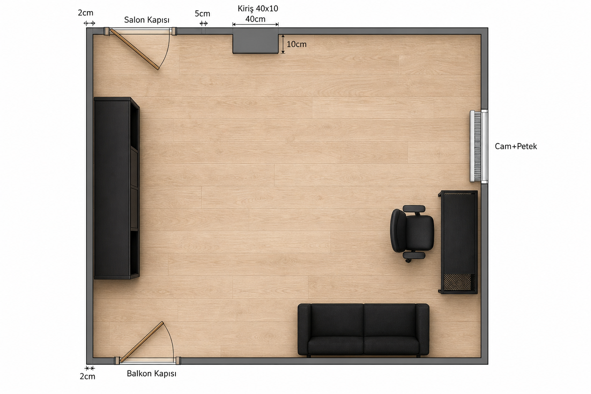
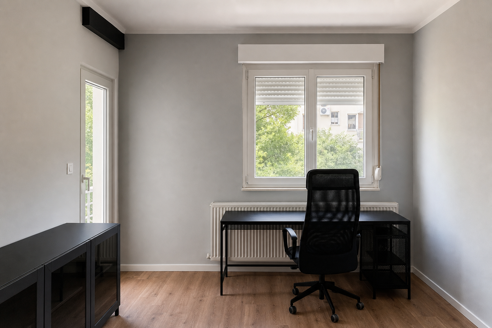

FJÄLLBO 100×36 siyah
303.397.35 · Sağ duvar, petek altı (cam ortada → önüne değil)
ikea.com.tr →Başka geometri yok. Eğik / beşgen duvar yok.

Aynı duvar hatları + gerçek ürünler.


303.397.35 · Sağ duvar, petek altı (cam ortada → önüne değil)
ikea.com.tr →702.611.50
ikea.com.tr →590.594.61 · Sol duvar ortası
ikea.com.tr →Momento Max/Silan · kapılar beyaz
filliboya.com →